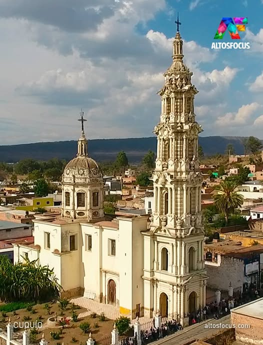

ARQUITECTURA RELIGIOSA
Sagrado Corazon

El Templo del Sagrado Corazón de Jesús en Cuquío, Jalisco, fue construido entre 1916 y 1919. La construcción de este templo fue una iniciativa conjunta de San Justino Orona Madrigal y las Hermanas Clarisas del Sagrado Corazón. La madre superiora de la congregación se encargó de las pinturas en el interior del templo.
San Felipe Apostol

Año de inicio: La construcción comenzó en 1762.
Año de finalización: Se completó en 1834.
Año de finalización: Se completó en 1834.
Ubicación: Se encuentra en Cuquío, Jalisco, México.
Relevancia: El templo es un monumento arquitectónico importante de la región.
Otras notas: Se sabe que el alcalde mayor en 1695 fue don Juan Polaco.
Volver a la Página Principal